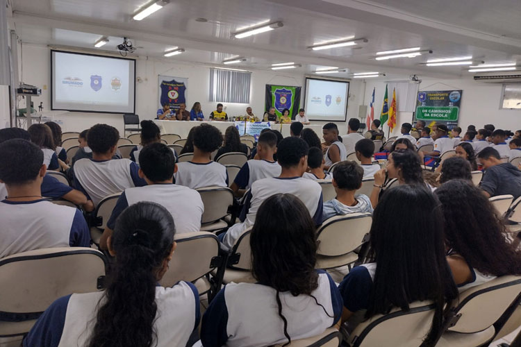
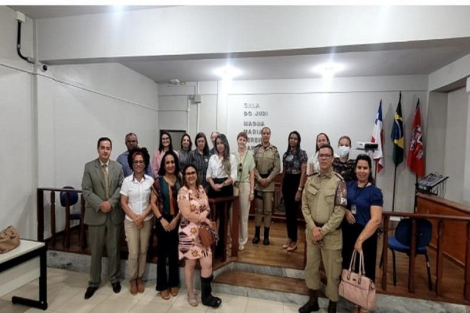
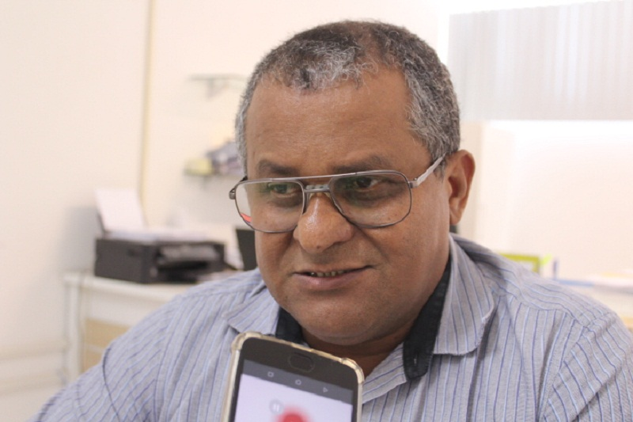

SMTT inicia Semana Nacional do Trânsito com palestra para estudantes em Brumado
Secretaria de Educação dialoga com instituições sobre pacificação no ambiente escolar
Secretaria de Educação se posiciona sobre acidente com criança de 8 anos em escola do município
